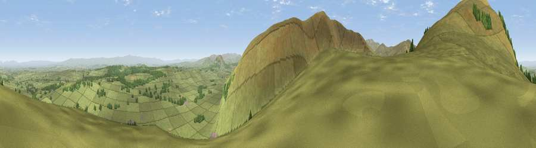

Viewpoint near Mungrisdale
#3684 in England · top 26% of its area beats it · near MungrisdaleThe view, rendered

A 360° render of this exact spot computed from the terrain model, tree cover and land cover — summer colours, afternoon light, calibrated against photographs of famous viewpoints. Real trees, hedges and buildings will differ in detail.
The panorama
Grey silhouette: terrain skyline in each direction (720 bearings, Earth curvature and refraction included). Dashed green: skyline with trees (+15 m) and buildings (+8 m) as obstacles. Blue strip: how far the ground is visible on each bearing.
Where the view opens
Wedge length = distance to the farthest visible ground on that bearing (vegetation-aware). Rings at 10, 25 and 50 km.
What fills the view
91% grassland · 8% woodland ·
Angular shares of the visible panorama (visual magnitude), not map area. Landscape diversity 0.15 (0–1 Shannon).
Key numbers
More beautiful places nearby
The staircase of upgrades: each row has a higher view potential than everything closer. Driving times are estimates from straight-line distance, calibrated against real road routing — check an actual route before setting out.
| Place | Direction | Drive | Score |
|---|---|---|---|
| Carrock Fell | NW · 2 km | ~4 min | 79.6 |
| Viewpoint near Mungrisdale | SW · 2 km | ~5 min | 80.8 |
| Blencathra | SSW · 6 km | ~12 min | 81.7 |
| Viewpoint near Bassenthwaite | WSW · 10 km | ~19 min | 82.8 |
| Skiddaw Little Man | WSW · 10 km | ~19 min | 83.0 |
| Skiddaw South Top | WSW · 10 km | ~19 min | 85.8 |
| Viewpoint near Applethwaite | WSW · 11 km | ~21 min | 86.7 |
| Long Side | WSW · 11 km | ~21 min | 89.5 |
54.68461, -3.00547 · source: screening · position refined by local search. Computed location — check access rights before visiting.